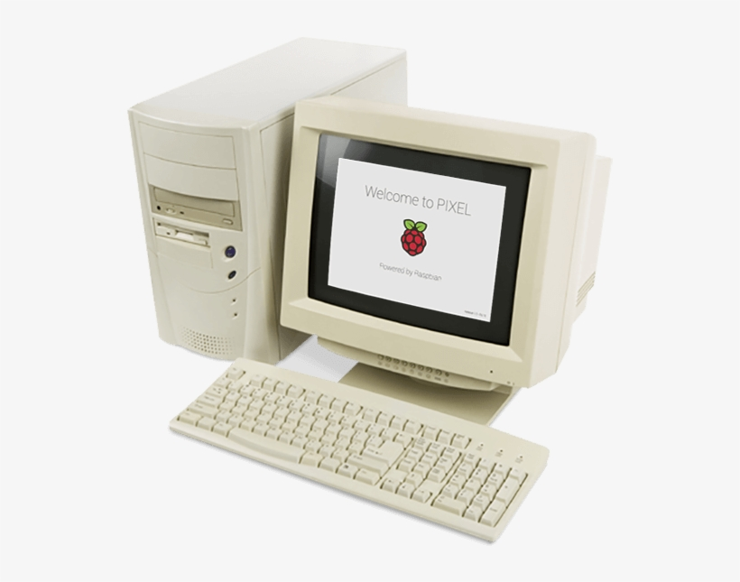
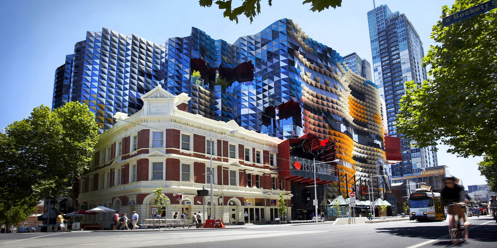

ID S3921705
MichaelDCann.github.io/Michael-C-Pofile
My name is Michael I have a European background, but I was born in Australia. In 2019 I graduated from year 12 and pursued plumbing for about 2 years and realised that I wouldn’t be happy working as a plumber for the rest of my life so now I work part time as a plumber while I study IT at RMIT. When I'm not working or studying, I like to play games with a bunch of friends.
My interest in IT started when I played a video game on the pc when I was 8 years old, I found it difficult to make friends at school and I couldn’t find anything to do at home. That’s when I started playing games on the computer and Nintendo 64. Playing games helped me throughout all my schooling, taking me away from the real world that’s filled with stress and anxiety at times. I've always felt attached to computer technology ever since I started using it, but I've never learnt how they work and what happens behind the scenes, so now I want to take my chance to take my interest in IT further by taking an IT course and to find my passion in IT. I currently have my eye on Cyber security but I'm not 100% sure what that career involves in detail.
I chose RMIT because the IT course they provide is on Open Universities Australia. I didn’t study VCE in high school, so I don’t have an ATAR, OUA allowed me to enrol in an IT course where I don’t need an ATAR, and I've heard great things about RMIT teachings.
I expect to know most things in IT at the base, ex; knowing how to create a website and an app, the fundamentals of coding and networking, and teaching the base structure if IT so we can build off one of the things we learn and get into a career we are passionate about.
When I start my career, I want to be an
important asset to the team and this job of being a Cyber security analyst for
a bank will be a challenge I'm up for. At this point in time, I'm very interested
and curious about coding, networking and I enjoy dealing with numbers.
I don’t
fully understand coding and networking, but I believe there are a lot of
numbers involved which makes it more interesting for me.
To be successful
in this role I will need to will have demonstrate experience in a Security
Operations Centre.
I need experience in Vulnerability Management, Cloud Management
& Defence, and to be able to work in a team with almost not supervision
We are seeking
an individual with the ability to work as part of a team and work under limited
supervision. Share knowledge you have and follow BOQ values for the benefit of
the team.
Since I just
started IT, I have no experience yet but ever since I graduated high school I’ve
learnt how to work as a team and communicate to clients and co-workers as a
plumber.
I plan to
complete this course to learn the base structure of IT which will help me when
I start a cyber security course.
A family friend has a high position job at a
cyber security firm and told me I can work there if I do well at university and
if I complete the course they support. After that they will interview me. This
will be my first step into my career and the BOQ job is my goal.
Your Scores:
Auditory: 30%
Visual: 55%
Tactile: 15%
Visual:
If you are a visual learner, you learn by
reading or seeing pictures. You understand and remember things by sight. You
can picture what you are learning in your head, and you learn best by using
methods that are primarily visual. You like to see what you are learning.
As a visual learner, you are usually neat
and clean. You often close your eyes to visualize or remember something, and
you will find something to watch if you become bored. You may have difficulty with
spoken directions and may be easily distracted by sounds. You are attracted to
colour and to verbal language (like stories) that is rich in imagery.
Here are some things that visual learners
like you can do to learn better:
· Sit near the front of the classroom.
(It won't mean you're the teacher's pet!)
· Have your eyesight checked on a
regular basis.
· Use flashcards to learn new
words.
· Try to visualize things that
you hear or things that are read to you.
· Write down key words, ideas, or
instructions.
I am concerned with helping others and
making practical contributions to the world around you. For you, work is an
opportunity to be of service to the people and organizations that you care
about. You are caring and supportive and like to feel that you have been
helpful to others.
I am a natural caretaker who tends to
see what other people need and step in to help when you can. You like a sense
of camaraderie and cooperation and want a workplace where everyone works
together to get things done.
I appreciate systems and processes that
allow you to be efficient and effective in accomplishing useful tasks. You like
clear expectations and want to know how your work has helped others in
practical ways.
I am drawn to work that allows you to
use your organizational skills to maintain structure and put things in order.
You like clear-cut tasks with specific expectations and appreciate accuracy and
precision. You are focused on results and seek to fulfil measurable goals.
IDEALISTIC
Driven to make the world a better place.
Creative and imaginative in coming up with insightful solutions to meaningful
problems.
CARING
Wants to be of service to others. Prefers
to work within established institutions to find ways to maintain stability and
security for people.
ANALYTICAL Likes to solve complex, rational problems.
Uses analytical skills to come up with innovative ways to improve logical
systems.
PRAGMATIC Wants to ensure accuracy and efficiency.
Enjoys working within structured, logical systems to accomplish realistic
goals.
After completing these three tests it has
made me realise my strengths and weaknesses, and now I can adapt and put my
strengths to use and slowly work on my weaknesses if I can.
I believe that a job can get done faster
and more efficient as a team when there are different personalities working
together. My tests tell me I should look for a group that can be supportive to
others and someone who has different attributes to me for example someone who
is more of a tactile learner and someone who can lead a group and I'll always
be there to support.
A new Myki system that allows public transport users to ride a bus, tram and train without needing to tap as you get on and off and to bring an end to fare evaders. Myki cards will still be around for those who don’t have a phone.
Motivation
In the past I have noticed how people use
public transport and haven’t paid. “New statistics from Public Transport
Victoria show thousands of Victorians have been fined for not having a valid
ticket on public transport. “The Herald Sun” reports that each day around 167
people are caught fare evading.” That’s around 60,000 people a year not playing
for their fare and that’s only from the ones who have been caught, this statistic
may even be doubled if every fare evader was caught. Fare evaders can occur
from not tapping your Myki as you get onto the vehicle or into the station,
another way is applying for a concession card without having a concession ID
which has cheaper fares to adult Myki’s. Public transport can get very
congested at peak hour and can end up being 15 minutes late down its route
which can make people late for their job and meetings.
Description
The new Myki system will be implemented into
the pre-existing PTV app which already has a great structure to build from. To
help stop fare evading Myki users who hold a Senior, Concession, or a child
Myki will have to renew their Myki every six months to verify that the card
holder is using the correct Myki. This can be done via the phone app or ticket box
at a train station. Concession card users can verify with a Victorian Health
Care Card, Australian Pensioner Concession Card or PTV ID (Primary, Secondary,
Tertiary or Asylum Seeker). If your Myki isn’t renewed, then it will lock, and
no money can be added to it, but you’ll be able to use the remainder of money that’s
still on the Myki.
To implement the touchless Myki there will
be a PTV network on the trains, trams and bus’s that’s connects automatically
with a chip planted inside of the Myki card and connects to the signals the PTV
app outputs when in use. New Myki cards will be rolled out gradually replacing
the old Myki cards with the new chip inside. The fare starts once the Myki has
fully connected to the network and once the vehicle has travelled a short
distance.
This ensures that people who aren’t on the
transport won’t get charged. When the Network recognises a Myki, it connects
the Myki to the network which is then connected to the satellite. The satellite
tracks the Myki travel and sends the data to the server. Once the Myki leaves
the local network area that’s on every vehicle and enters the network that’s at
every vehicle stop the money will be transferred through the PTV server within
the PTV network. The touchless Myki on the mobile will be available right away,
all you need to do is signup to touchless Myki on the PTV app and follow the
prompts. Auto top up can also be enable so you don’t have to keep manually
adding money to your Myki.
Tools and Technologies
The software needed to be the face of the
idea is the PTV app. The app is easy to navigate, and it already has everything
you need about public transport in Melbourne on it.
Networks, servers and satellites are all
needed to work together to register the Myki ticket, determine the fare and to
transfer the money to PTV.
The server is what connects all the devices
(Myki’s) and connects it to a local network or a wide area network. A server
collects and sends information and sends it to the correct systems across the
network. The Network connects all the servers and computers together so they
can communicate data to each other.
Skills required
App developer: An app developer is a
computer software engineer whose job is creating, testing and programming apps
for computers, mobile phones, and tablets. App developers usually work in teams
and think of ideas and concepts for their clients. The app developer will oversee
updating the design and code of the PTV app so users can create a touchless
Myki card.
Computer network architect: Designs and constructs
data communication networks. These can include local area networks, wide area
networks, which can range from a small connection to a global connection.
Computer network architects also take care of upgrading software like network
drivers and hardware, such as adapters or routers. Computer network architects
are responsible for building the network for the systems, servers and computers
to share data to each other.
Electrical engineer: Designs, develops,
tests and manages the manufacturing of electrical equipment and systems, such
as electric motors, smartphones and power generation equipment. Electrical
engineers are required to design and build the Myki cards with the wireless
chip.
It will be more difficult to find these
skills than finding the hardware but not impossible, this job for these skills
can be advertise on social media and seek. After gaining the skills required
it’s about the budget and funding of the project idea.
Outcome
There are some pros and cons to this
project idea. Some being that the ticket inspectors may not be needed as much
to check tickets, however the numbers of fare evasion will drop significantly
and there won’t be any more waiting for people to top up their Myki or trying
to scan their Myki as they enter and leave the vehicle allowing public
transport to arrive on time if there isn’t any traffic.
References
Beat Magazine. 2021. Study shows 167
Melburnians are caught fare evading each day. [online] Available at:
<https://beat.com.au/study-shows-167-melburnians-are-caught-fare-evading-each-day/>
[Accessed 18 September 2021].
Careerexplorer.com. 2021. What does a
computer network architect do? - CareerExplorer. [online] Available at:
<https://www.careerexplorer.com/careers/computer-network-architect/>
[Accessed 18 September 2021].
Snhu.edu. 2021. What Does an Electrical
Engineer Do?. [online] Available at:
<https://www.snhu.edu/about-us/newsroom/stem/what-do-electrical-engineers-do>
[Accessed 18 September 2021].
Careerexplorer.com. 2021. What does an app
developer do? - CareerExplorer. [online] Available at:
<https://www.careerexplorer.com/careers/app-developer/> [Accessed 18
September 2021].
Contact: S3921705@student.rmit.edu.au
created with
Website Builder Software .